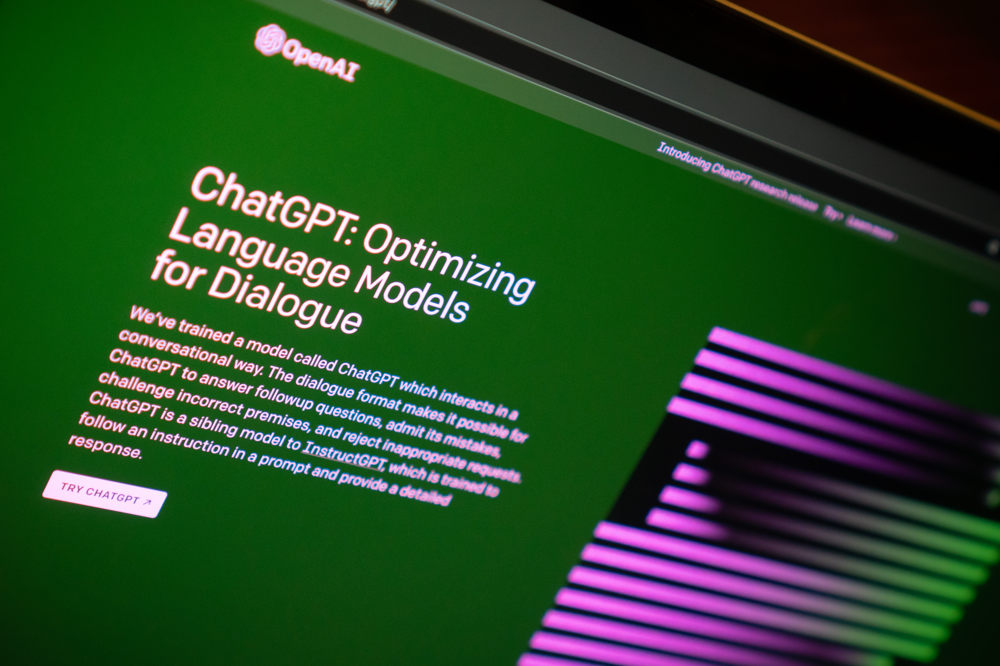

ARTICLE
I sometimes also like to read some interesting articles that can add to my insight
this is my favorite article and i recommend it for you
Featured Posts

ChatGPT dan Programmer Akan Saling Membantu
Jadilah ahli seahli-ahlinya jika tidak ingin menjadi pengangguran teknologi.
Read more
6 Bahasa Pemrograman Web Terbaik Saat Ini
Hari ini kita tahu profesi programmer merupakan salah satu pekerjaan yang populer di masyarakat, khususnya para anak muda.
Read moreBisakah Belajar Otodidak Untuk Jadi Programmer Handal?
Banyak yang bilang untuk menjadi seorang programmer merupakan hal yang sulit. Selain harus banyak bergelut dengan coding,
Read more
5+ Text Editor Terbaik Untuk Web Developer (Update 2023)
Web developer menghabiskan banyak waktu untuk menulis kode. 5 text editor ini dapat..
Read more
9 Cara Belajar Pemrograman dengan Cepat
Sebelum Anda memutuskan untuk terjun ke pekerjaan sebagai programmer, Anda perlu memilih resources yang akan Anda pelajari
Read more